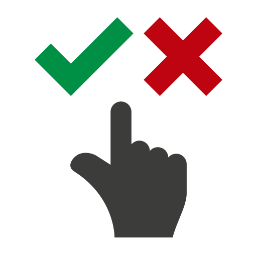
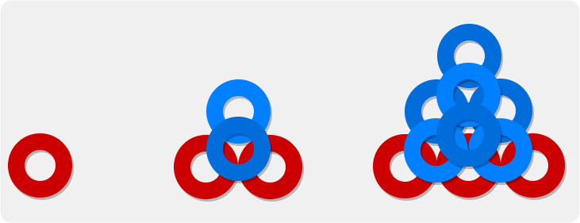
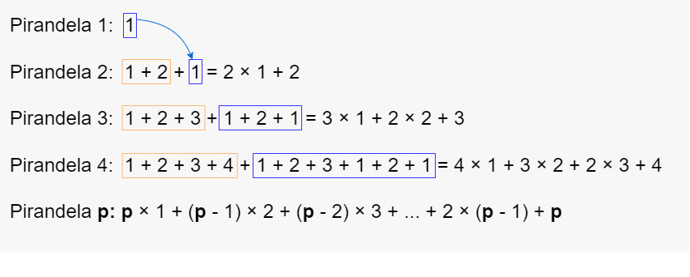

Seleccioná la opción correcta
Reto N° 3
Sabemos que cada pirandela se forma con una base de 1 + 2 + 3 + … + p arandelas y, sobre ella, se construye una pirandela igual a la anterior.
Tratemos de hallar algún patrón numérico en esa relación.
Observen los patrones, las figuras y la relación planteada y tengan en cuenta que puede haber una o varias respuestas correctas. Seleccionar todas las correctas.
Al finalizar podrán comprobar sus respuestas.


Entonces podríamos concluir que para construir la quinta pirandela necesitaremos 5 × 1 + 4 × 2 + 3 × 3 + 4 × 2 + 5 arandelas.